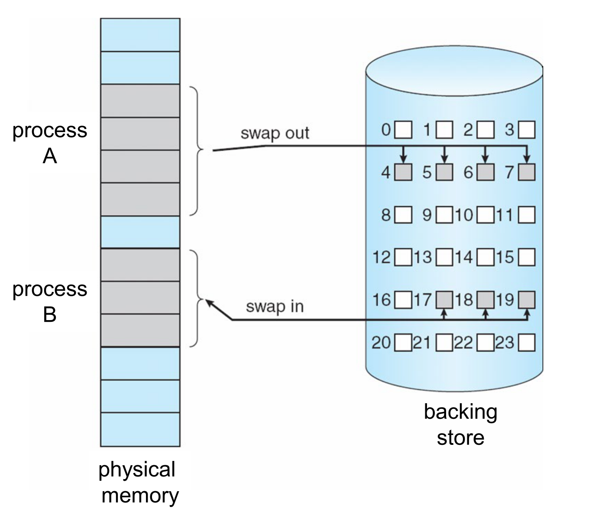
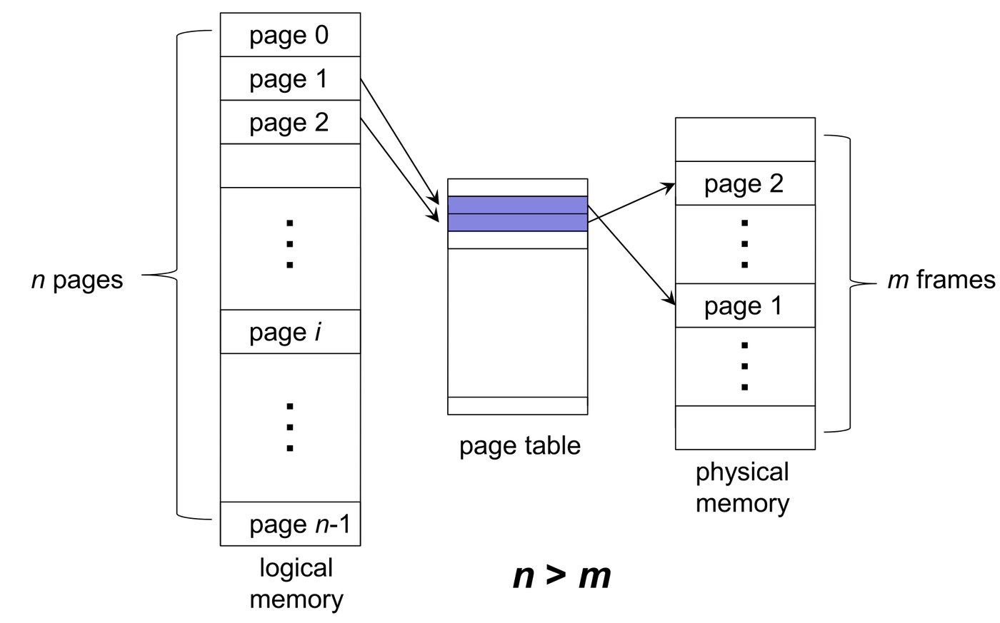
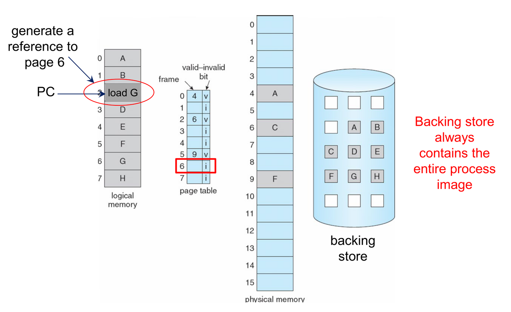
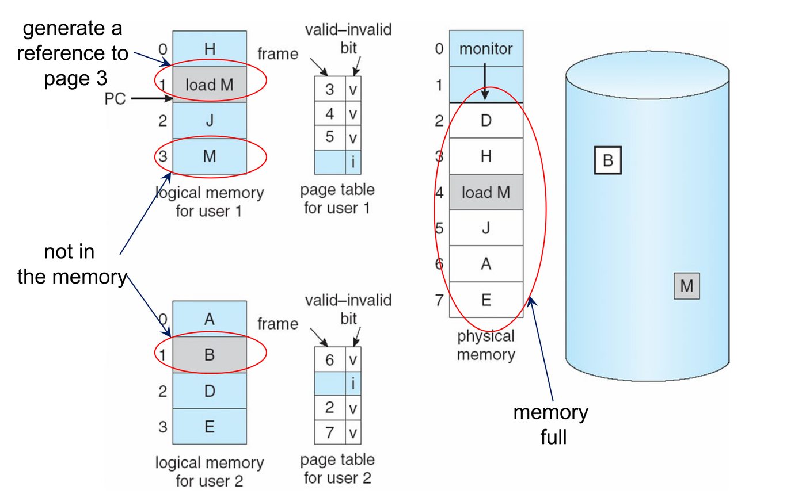
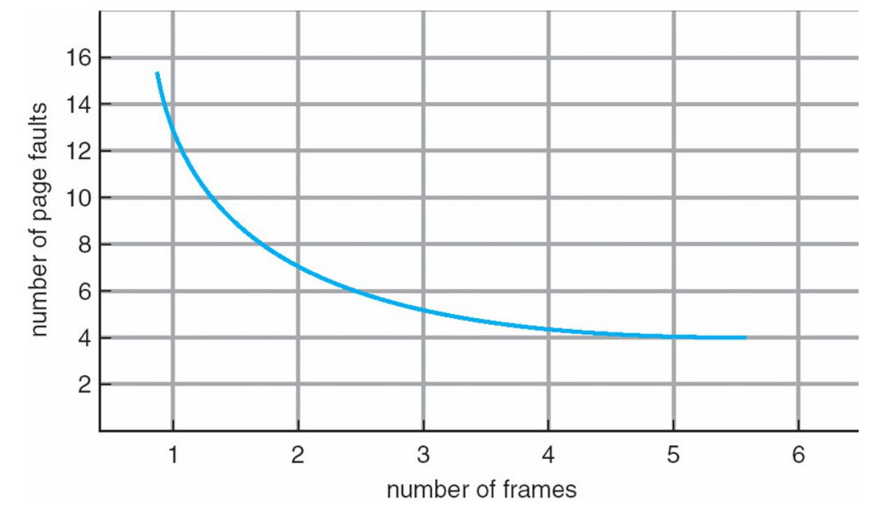
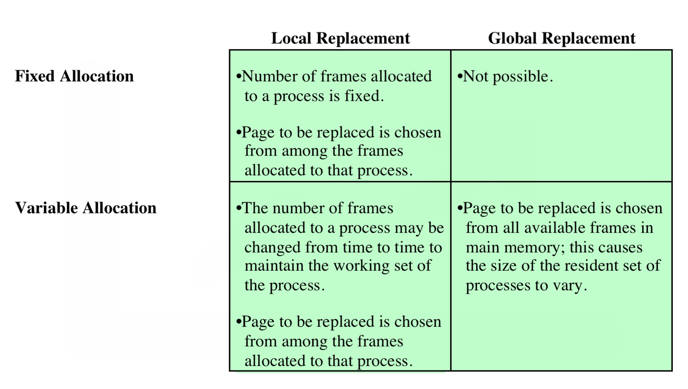
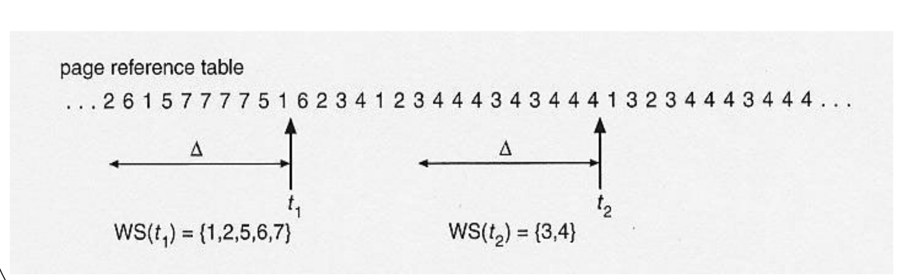
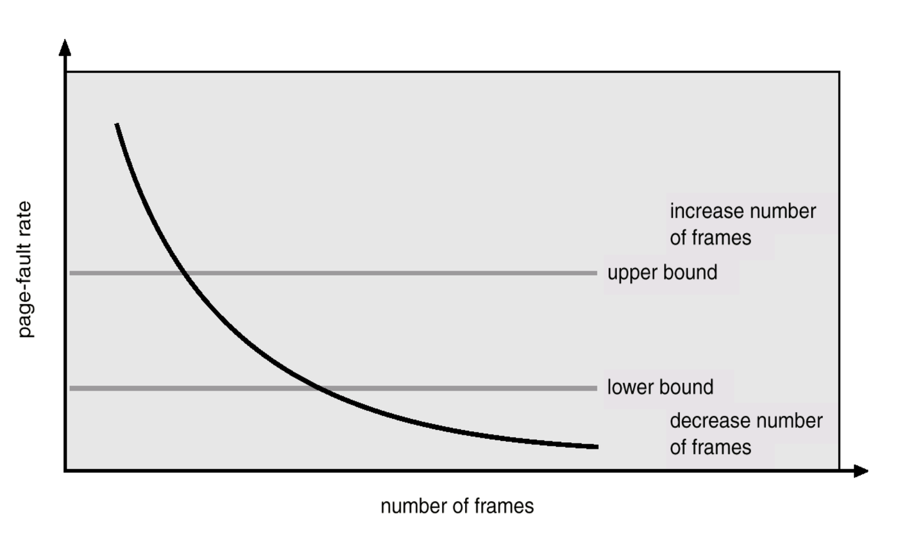

This was written entirely with AI.
These notes cover Lecture 8. Lecture 7 put every page of a process into memory before the process ran. This lecture removes that rule: only the pages in use need to be in memory. That raises three new questions, which the sections answer in order: what happens when a page is missing, which page to remove when memory is full, and how many frames each process should get.
1. Why Virtual Memory
1.1 Swapping
The OS can move a whole process out of memory to a backing store, and later move it back in to continue. This is swapping. The backing store is a fast disk, large enough to hold a copy of the memory image of every process, with direct access to each one.

- Most of the swap time is transfer time. It grows with the amount of memory that moves.
- Swapping frees memory for processes that need more. It also lets more processes be in progress at the same time (a higher degree of multiprogramming).
1.2 The limit of Lecture 7
In Lecture 7, the whole program had to be in memory to run. So a program, with all its library code, could never be larger than physical memory.
Virtual memory removes this limit. It separates the logical memory of a program from physical memory:
- The logical address space can be much larger than physical memory. Only the address format of the computer limits its size.
- Only part of a program needs to be in memory to run.

The results:
- More processes fit in memory, so the degree of multiprogramming and the CPU utilization go up.
- The OS must be able to move pages in and out of memory while processes run.
Virtual memory is usually built with demand paging.
2. Demand Paging
2.1 Load a page only when the program needs it
With demand paging, the OS loads a page into memory only when the program refers to it. When the CPU generates a logical address ⟨page number, offset⟩, that is a reference to the page, so the page is needed.
To know which pages are in memory, each page-table entry gets a valid–invalid bit:
- v (valid): the page is in memory. The entry holds its frame number.
- i (invalid): the page is not in memory. The entry holds where the page is on the disk.
At the start, every entry is i. The backing store always holds a copy of the whole process image.

2.2 The page fault
When the hardware translates an address and finds i in the page-table entry, it causes a page fault: a trap to the OS. The OS then brings the page in:

- The program refers to a page. The hardware checks the page table.
- The page is not in memory, so the hardware traps to the OS. The OS saves the state of the interrupted process.
- The OS uses the page-table entry to find the page on the backing store.
- The OS finds a free frame (from the free-frame list, or with a page-replacement algorithm, section 3). It starts a disk read of the page into that frame.
- When the disk read is complete, the OS updates the page-table entry: it sets the bit to v and writes the frame number k.
- The OS restores the state of the process and restarts the instruction that caused the fault. This time the access succeeds.
The disk read is slow. While it runs, the OS gives the CPU to another process. So a page fault also causes context switches.
2.3 One memory access, from start to end
Lecture 7’s TLB and this lecture’s valid bit work together. On every memory access:
- Look in the TLB. If the page number is there (TLB hit), take the frame number and access memory. Done.
- TLB miss: read the page table. If the entry is v, take the frame number, put the pair into the TLB, and access memory. Done.
- The entry is i: page fault. The OS loads the page (section 2.2), updates the page table, and restarts the instruction. The instruction then goes through steps 1 and 2 again.
So three outcomes are possible: TLB hit; TLB miss but the page is in memory; TLB miss and page fault.
A TLB hit always means the page is in memory. The TLB holds only pairs for pages in memory. When the OS removes a page from memory, it also removes the page’s pair from the TLB.
2.4 How much page faults cost
Let p be the probability of a page fault on an access (0 ≤ p ≤ 1). If p = 0, there are no faults. If p = 1, every access faults.
Memory access time is much smaller than page fault time. A memory access takes nanoseconds. A page fault needs a disk read, which takes milliseconds.
Example. Memory access time is 100 ns. Page fault time is 8 ms = 8,000,000 ns.
- With p = 0.001 (one fault in 1000 accesses): EAT = 0.999 × 100 + 0.001 × 8,000,000 = 99.9 + 8000 = 8099.9 ns. Memory is now about 80 times slower.
- To keep the slow-down under 10% (EAT ≤ 110 ns): 100 + p × (8,000,000 − 100) ≤ 110, so p ≤ 10 / 7,999,900 ≈ 0.00000125. That is less than one fault in 800,000 accesses.
So p must be very small. The rest of this lecture is about keeping it small.
3. Page Replacement
3.1 When there is no free frame
A page fault occurs, but every frame is in use:

The solution: choose a page in memory that is probably not in use, and replace it. The page that is removed is the victim.

- Use a page-replacement algorithm to choose a victim. Write the victim to the backing store (page out).
- Change the victim’s page-table entry to invalid.
- Read the needed page into the freed frame (page in).
- Update the page-table entry of the new page.
Now one page fault can need two disk transfers: one out and one in. This makes the page fault time even longer.
3.2 The dirty bit saves the write
Many victims have not changed since they were loaded. Their copy on the disk is still correct. So the OS does not need to write them out.
The hardware sets a modify bit, also called the dirty bit, in a page’s entry when the process writes to the page. On replacement:
- a dirty page (bit set) is written to the backing store first,
- a clean page (bit clear) is simply overwritten.
With page replacement, the separation of logical and physical memory is complete: a large virtual memory can run on a small physical memory.
3.3 How to compare algorithms
A good algorithm gives the lowest page-fault rate. To compare algorithms, run each one on the same reference string: the sequence of page numbers that a process refers to. Count the page faults.
The lecture always uses this reference string:
1, 2, 3, 4, 1, 2, 5, 1, 2, 3, 4, 5Limits on the count. Suppose the frames start empty, the string has L references, and it uses N different pages.
- At least N faults. The first reference to each page is always a fault, whatever the algorithm.
- At most L faults. Every reference faults, at worst.
- If there are N or more frames, every algorithm gives exactly N faults: nothing is ever replaced.
The lecture’s string has L = 12 and N = 5. So every algorithm gives between 5 and 12 faults.
You expect more frames → fewer faults:

But this is not always true. Section 6 explains when and why.
4. Page-Replacement Algorithms
The tables show the content of each frame after each reference. “P” marks a page fault. A blank fault cell is a hit.
4.1 First-in, first-out (FIFO)
Rule: replace the page that has been in memory the longest. Only the time the page was loaded matters. A later use of the page does not change its place.
How to trace it: keep a queue of the pages in load order. On a fault, the page at the front of the queue leaves, and the new page joins at the back. A hit does not change the queue.
With 3 frames:
| Reference | 1 | 2 | 3 | 4 | 1 | 2 | 5 | 1 | 2 | 3 | 4 | 5 |
|---|---|---|---|---|---|---|---|---|---|---|---|---|
| Frame 1 | 1 | 1 | 1 | 4 | 4 | 4 | 5 | 5 | 5 | 5 | 5 | 5 |
| Frame 2 | 2 | 2 | 2 | 1 | 1 | 1 | 1 | 1 | 3 | 3 | 3 | |
| Frame 3 | 3 | 3 | 3 | 2 | 2 | 2 | 2 | 2 | 4 | 4 | ||
| Fault | P | P | P | P | P | P | P | P | P |
9 page faults.
With 4 frames:
| Reference | 1 | 2 | 3 | 4 | 1 | 2 | 5 | 1 | 2 | 3 | 4 | 5 |
|---|---|---|---|---|---|---|---|---|---|---|---|---|
| Frame 1 | 1 | 1 | 1 | 1 | 1 | 1 | 5 | 5 | 5 | 5 | 4 | 4 |
| Frame 2 | 2 | 2 | 2 | 2 | 2 | 2 | 1 | 1 | 1 | 1 | 5 | |
| Frame 3 | 3 | 3 | 3 | 3 | 3 | 3 | 2 | 2 | 2 | 2 | ||
| Frame 4 | 4 | 4 | 4 | 4 | 4 | 4 | 3 | 3 | 3 | |||
| Fault | P | P | P | P | P | P | P | P | P | P |
10 page faults: more frames, but more faults. This is Belady’s anomaly. Section 6 explains why it occurs.
4.2 Optimal (OPT)
Rule: replace the page that will not be used for the longest time in the future.
How to trace it: at each fault, look ahead in the string. For each page in memory, find its next use. Replace the page whose next use is furthest away, or that is never used again.
With 4 frames:
| Reference | 1 | 2 | 3 | 4 | 1 | 2 | 5 | 1 | 2 | 3 | 4 | 5 |
|---|---|---|---|---|---|---|---|---|---|---|---|---|
| Frame 1 | 1 | 1 | 1 | 1 | 1 | 1 | 1 | 1 | 1 | 1 | 4 | 4 |
| Frame 2 | 2 | 2 | 2 | 2 | 2 | 2 | 2 | 2 | 2 | 2 | 2 | |
| Frame 3 | 3 | 3 | 3 | 3 | 3 | 3 | 3 | 3 | 3 | 3 | ||
| Frame 4 | 4 | 4 | 4 | 5 | 5 | 5 | 5 | 5 | 5 | |||
| Fault | P | P | P | P | P | P |
6 page faults. At reference 5 (the 7th reference), memory holds 1, 2, 3 and 4. Look ahead: 1 is used next (8th), then 2 (9th), then 3 (10th), then 4 (11th). Page 4 is used last, so OPT replaces it. At the 11th reference (page 4), memory holds 1, 2, 3 and 5. After this point, 5 is used once more, and 1, 2 and 3 are never used again. OPT can replace any of 1, 2 or 3; the slide replaces 1.
- OPT gives the lowest possible number of faults.
- It cannot be built, because the OS does not know the future references. It is used as a benchmark: a good algorithm comes close to OPT.
4.3 Least recently used (LRU)
Rule: replace the page that has not been used for the longest time in the past. It is OPT looking backward instead of forward. The idea: a page not used for a long time will probably not be used soon.
How to trace it: at each fault, look back in the string. For each page in memory, find its last use. Replace the page whose last use is furthest back. Unlike FIFO, a hit changes the order: it makes the page the most recently used.
With 4 frames:
| Reference | 1 | 2 | 3 | 4 | 1 | 2 | 5 | 1 | 2 | 3 | 4 | 5 |
|---|---|---|---|---|---|---|---|---|---|---|---|---|
| Frame 1 | 1 | 1 | 1 | 1 | 1 | 1 | 1 | 1 | 1 | 1 | 1 | 5 |
| Frame 2 | 2 | 2 | 2 | 2 | 2 | 2 | 2 | 2 | 2 | 2 | 2 | |
| Frame 3 | 3 | 3 | 3 | 3 | 5 | 5 | 5 | 5 | 4 | 4 | ||
| Frame 4 | 4 | 4 | 4 | 4 | 4 | 4 | 3 | 3 | 3 | |||
| Fault | P | P | P | P | P | P | P | P |
8 page faults. At reference 5 (the 7th reference), the last uses are: 1 at the 5th, 2 at the 6th, 3 at the 3rd, 4 at the 4th. Page 3 was used least recently, so LRU replaces it. (FIFO would replace page 1 here, because 1 was loaded first. The hit on 1 at the 5th reference saves it under LRU.)
With 3 frames, LRU gives 10 faults on this string. So for LRU, 3 → 4 frames gives 10 → 8 faults: more frames, fewer faults.
4.4 How to build LRU
Exact LRU needs the order of all uses. The lecture gives two methods.
Counter method.
- Each page-table entry has a time-of-use field.
- The CPU has a logical clock that goes up by 1 on every memory reference.
- On every reference, the clock value is copied into the time-of-use field of that page.
- On a page fault, replace the page with the smallest time-of-use.
Stack method.
- Keep a stack of page numbers, as a doubly linked list.
- When a page is referenced, move it to the top.
- The bottom of the stack is always the LRU page.
- Each reference costs a list update, but a replacement needs no search.
The lecture’s string with 4 frames, as a stack (top first, after each reference):
| Reference | 1 | 2 | 3 | 4 | 1 | 2 | 5 | 1 | 2 | 3 | 4 | 5 |
|---|---|---|---|---|---|---|---|---|---|---|---|---|
| Top | 1 | 2 | 3 | 4 | 1 | 2 | 5 | 1 | 2 | 3 | 4 | 5 |
| 1 | 2 | 3 | 4 | 1 | 2 | 5 | 1 | 2 | 3 | 4 | ||
| 1 | 2 | 3 | 4 | 1 | 2 | 5 | 1 | 2 | 3 | |||
| Bottom | 1 | 2 | 3 | 4 | 4 | 4 | 5 | 1 | 2 | |||
| Fault | P | P | P | P | P | P | P | P |
On each fault with a full stack, the bottom page leaves. At the 7th reference the bottom is 3, so 3 leaves. Again 8 page faults.
Both methods need hardware help on every memory reference. That is expensive, and most hardware does not have it.
4.5 LRU approximation: the reference bit
Most hardware gives a simpler aid: a reference bit R for each page.
- At the start, R = 0.
- When the page is referenced (read or written), the hardware sets R = 1.
A page with R = 0 has not been used since the bit was last cleared. So it is a good victim. But R does not show the order of use, and many pages can have R = 0. So R only approximates LRU.
Do not confuse the reference bit with the dirty bit (section 3.2). The reference bit says “the page was used” (read or written). It helps to choose a victim. The dirty bit says “the page was written”. It decides whether the victim must be written back.
5. Second Chance and the Clock Algorithm
5.1 The problem with FIFO
FIFO can remove a page that the program uses all the time, only because that page was loaded early. Example: a loop variable loaded at the start is the oldest page, so FIFO removes it, and the next reference faults again.
The fix: before removing the oldest page, check whether it was used recently. The reference bit gives exactly that information.
5.2 Second chance
Second chance is FIFO with a check of the reference bit:
- Take the oldest page as the candidate.
- If its R = 1, the page was used recently. Give it a second chance: set R = 0, and treat it as if it had just been loaded (it goes to the back of the queue). Go to step 1 with the next oldest page.
- If its R = 0, replace it.
Why it approximates LRU. A page survives as long as it is used at least once between two checks. A page is removed only when it has not been used for a whole pass through the queue. So the victim is a page that is old and not used recently.
How to apply it to a table of pages. Suppose you are given each page’s load time and R bit. Sort the pages by load time, oldest first. Go down the list. The first page with R = 0 is the victim. Every page with R = 1 that you pass gets R = 0. If all pages have R = 1, the oldest page is the victim (section 5.5).
5.3 The clock algorithm
Moving a page to the back of a queue costs time. The clock algorithm does the same thing without moving pages. It puts the frames in a circular list, and keeps a hand that points to the oldest page.

On a page fault:
- Look at the page under the hand.
- If R = 1: set R = 0, and move the hand one place. Go to step 1.
- If R = 0: replace this page with the new page. Move the hand one place.
On a hit: the hardware sets the page’s R = 1. The hand does not move.
Clearing R and moving the hand on is the same as “move the page to the back of the queue”. The page now sits just behind the hand, so the hand reaches it last.
Course convention (slide 8.32): a newly loaded page starts with R = 0. Some textbooks set R = 1 at load, because loading is caused by a reference. Use R = 0 in this course.
5.4 Clock, traced step by step
The lecture’s string with 4 frames. Each cell shows “page, R”. The “Hand after” column shows the frame that the hand points to after the reference.
| Ref | Fault? | F1 | F2 | F3 | F4 | Hand after | What happened |
|---|---|---|---|---|---|---|---|
| 1 | P | 1,0 | F2 | Empty frame | |||
| 2 | P | 1,0 | 2,0 | F3 | Empty frame | ||
| 3 | P | 1,0 | 2,0 | 3,0 | F4 | Empty frame | |
| 4 | P | 1,0 | 2,0 | 3,0 | 4,0 | F1 | Empty frame |
| 1 | 1,1 | 2,0 | 3,0 | 4,0 | F1 | Hit: R of page 1 set to 1 | |
| 2 | 1,1 | 2,1 | 3,0 | 4,0 | F1 | Hit: R of page 2 set to 1 | |
| 5 | P | 1,0 | 2,0 | 5,0 | 4,0 | F4 | F1: R = 1, clear, move. F2: R = 1, clear, move. F3: R = 0, replace 3 |
| 1 | 1,1 | 2,0 | 5,0 | 4,0 | F4 | Hit | |
| 2 | 1,1 | 2,1 | 5,0 | 4,0 | F4 | Hit | |
| 3 | P | 1,1 | 2,1 | 5,0 | 3,0 | F1 | F4: R = 0, replace 4 |
| 4 | P | 1,0 | 2,0 | 4,0 | 3,0 | F4 | F1: clear. F2: clear. F3: R = 0, replace 5 |
| 5 | P | 1,0 | 2,0 | 4,0 | 5,0 | F1 | F4: R = 0, replace 3 |
8 page faults, the same as slide 8.32.
Compare with FIFO at the 7th reference (page 5). FIFO removes page 1, the oldest. Clock skips pages 1 and 2, because the hits at the 5th and 6th references set their R bits. So clock keeps 1 and 2, which are used again next. Here clock makes the same choice as LRU.
5.5 The worst case: clock becomes FIFO
Suppose every page has R = 1 at a fault. The hand goes all the way round and clears every bit. It comes back to the page where it started, which now has R = 0, and replaces it. That page is the oldest one. So when all bits are set, clock replaces the oldest page: it becomes FIFO.
5.6 What each algorithm looks at
| Algorithm | Information it uses to choose a victim |
|---|---|
| FIFO | The load time of each page |
| OPT | The future references |
| LRU | The time of the last use of each page |
| Second chance / clock | The load order and the reference bit |
6. Belady’s Anomaly
6.1 What it is
Belady’s anomaly: for some algorithms and some reference strings, more frames give more page faults. Section 4.1 showed it: FIFO gives 9 faults with 3 frames, but 10 faults with 4 frames.
The anomaly is not about one bad string. It is about the algorithm. An algorithm either can show the anomaly on some string, or never shows it on any string.
6.2 Why FIFO shows it
With 3 frames and 4 frames, FIFO keeps different sets of pages, and the 3-frame set is not always inside the 4-frame set. Look at the pages in memory after each reference:
| After reference | 1 | 2 | 3 | 4 | 1 | 2 | 5 | 1 | 2 |
|---|---|---|---|---|---|---|---|---|---|
| 3 frames | {1} | {1,2} | {1,2,3} | {2,3,4} | {3,4,1} | {4,1,2} | {1,2,5} | {1,2,5} | {1,2,5} |
| 4 frames | {1} | {1,2} | {1,2,3} | {1,2,3,4} | {1,2,3,4} | {1,2,3,4} | {2,3,4,5} | {3,4,5,1} | {4,5,1,2} |
Follow it step by step:
- Up to the 6th reference, every 3-frame set is inside the 4-frame set.
- At the 7th reference (page 5), both fault. With 3 frames, FIFO removes 4. With 4 frames, FIFO removes 1, the oldest page there.
- Now page 1 is in the 3-frame memory, but not in the 4-frame memory.
- The 8th reference is page 1. It hits with 3 frames and faults with 4 frames.
- That fault removes 2 from the 4-frame memory, so the 9th reference (page 2) faults again. The extra faults continue.
The cause: with more frames, FIFO loads and removes pages at different times. So “oldest” means a different page, and the larger memory can drop a page that the smaller memory keeps.
6.3 Why LRU and OPT never show it: the inclusion property
An algorithm has the inclusion property if, after every reference, the pages in memory with n frames are always a subset of the pages in memory with n + 1 frames. (An algorithm with this property is also called a stack algorithm.)
Inclusion means no anomaly. If a page is in memory with n frames, it is also in memory with n + 1 frames. So every hit with n frames is also a hit with n + 1 frames. Then n + 1 frames can never have more faults than n frames.
LRU has the inclusion property. With n frames, LRU always holds the n most recently used pages. With n + 1 frames, it holds the n + 1 most recently used pages. The n most recent pages are always among the n + 1 most recent pages. So the subset rule always holds.
OPT has the inclusion property. The lecture says: one more frame gives “more look-ahead”. The pages that OPT keeps in n frames are always a subset of the pages it keeps in n + 1 frames.
FIFO does not have it, as section 6.2 showed.
6.4 Does clock show Belady’s anomaly?
The lecture does not say. The answer is yes, clock can show it, because clock does not have the inclusion property. Its choice depends on the hand position and the R bits, and both depend on the history of faults and hits. With a different number of frames, that history is different. Section 5.5 also shows that clock becomes FIFO when all R bits are set, and FIFO has the anomaly.
A short example (course convention, new pages start with R = 0). Reference string: 1, 2, 1, 2, 3, 4, 3.
With 2 frames:
| Ref | Fault? | F1 | F2 | Hand after | What happened |
|---|---|---|---|---|---|
| 1 | P | 1,0 | F2 | Empty frame | |
| 2 | P | 1,0 | 2,0 | F1 | Empty frame |
| 1 | 1,1 | 2,0 | F1 | Hit | |
| 2 | 1,1 | 2,1 | F1 | Hit | |
| 3 | P | 3,0 | 2,0 | F2 | F1: clear. F2: clear. F1: R = 0, replace 1 |
| 4 | P | 3,0 | 4,0 | F1 | F2: R = 0, replace 2 |
| 3 | 3,1 | 4,0 | F1 | Hit |
4 page faults.
With 3 frames:
| Ref | Fault? | F1 | F2 | F3 | Hand after | What happened |
|---|---|---|---|---|---|---|
| 1 | P | 1,0 | F2 | Empty frame | ||
| 2 | P | 1,0 | 2,0 | F3 | Empty frame | |
| 1 | 1,1 | 2,0 | F3 | Hit | ||
| 2 | 1,1 | 2,1 | F3 | Hit | ||
| 3 | P | 1,1 | 2,1 | 3,0 | F1 | Empty frame |
| 4 | P | 1,0 | 2,0 | 4,0 | F1 | F1: clear. F2: clear. F3: R = 0, replace 3 |
| 3 | P | 3,0 | 2,0 | 4,0 | F2 | F1: R = 0, replace 1 |
5 page faults: one frame more, one fault more.
Why: with 3 frames, page 3 went into the empty frame, so the hand did not pass pages 1 and 2. Their R bits stayed 1. At the next fault, the hand skipped 1 and 2, and removed 3, the newest page, which was needed next. With 2 frames, the hand cleared the bits one fault earlier, so it removed old pages instead.
(These traces were checked by simulation. A string with the anomaly also exists if new pages start with R = 1.)
On the lecture’s own string, clock does not show the anomaly: 10 faults with 3 frames, 8 with 4. One string with no anomaly proves nothing about the algorithm. One string with the anomaly is enough to prove that the algorithm can have it.
6.5 The algorithms side by side
| Algorithm | Replaces the page that… | Faults (lecture string, 4 frames) | Belady’s anomaly? | Practical? |
|---|---|---|---|---|
| FIFO | was loaded earliest | 10 | Yes | Yes, simple |
| OPT | will be used furthest in the future | 6 | No (inclusion property) | No, it needs the future |
| LRU | was used least recently | 8 | No (inclusion property) | Expensive: hardware help on every reference |
| Clock (second chance) | is oldest with R = 0 | 8 | Yes, it can (not stated in the lecture) | Yes: needs only a reference bit |
7. How Many Frames Each Process Gets
7.1 The trade-off
The OS must decide how many frames to give each process:
- Fewer frames for each process → more processes fit in memory.
- But too few frames → more page faults.
- Above some number of frames, more frames no longer reduce the page faults much.
7.2 Fixed and variable allocation
- Fixed allocation: each process gets a fixed number
of frames. On a page fault, one of that process’s own
pages must be replaced. Two ways to choose the number:
- Equal allocation: m frames and n processes give each process m / n frames.
- Proportional allocation: each process gets frames in proportion to its size. With sizes and total size , process i gets about frames. Example: 60 frames, process A of 20 pages and process B of 100 pages. S = 120. A gets 20/120 × 60 = 10 frames, B gets 100/120 × 60 = 50 frames.
- Variable allocation: the number of frames of a process can change during its life.
7.3 Local and global replacement
- Global replacement: the victim can be any frame in memory, including a frame of another process. One process can take a frame from another. A process’s performance then depends on what the other processes do.
- Local replacement: the victim must be one of the process’s own frames. A process can then hold on to pages that it does not use much, and other processes cannot get them.

In the slide, process A refers to page A6, which is not in memory. The numbers are the time of last access.
- With local replacement, LRU looks only at A’s pages. A5 has the smallest time (3) among them, so A6 replaces A5.
- With global replacement, LRU looks at all pages. B3 has the smallest time of all (2), so A6 replaces B3, a page of process B.
7.4 Which combinations are possible

| Local replacement | Global replacement | |
|---|---|---|
| Fixed allocation | The number of frames stays fixed. The victim is one of the process’s own pages | Not possible. Taking another process’s frame would change both processes’ frame counts |
| Variable allocation | The OS changes the number of frames from time to time, to fit the working set (section 8.4). The victim is one of the process’s own pages | The victim can be any frame in memory. The number of frames of each process changes |
Fixed allocation requires local replacement. Variable allocation can use either.
8. Thrashing
8.1 What thrashing is
Suppose a process does not have “enough” frames. It needs a page, so it replaces a page. But it needs that page again soon, so it faults again, and so on. Its page-fault rate is very high.
Thrashing means that processes are busy moving pages in and out, and do almost no useful work.
8.2 How thrashing makes itself worse
- Processes fault a lot, so they wait for the disk. CPU utilization drops.
- The OS sees low CPU utilization. The usual reaction is to add another process (raise the degree of multiprogramming), to use the idle CPU.
- The new process takes frames from the others. They fault even more.
- CPU utilization drops further. Go back to step 2.

So low CPU utilization with a high degree of multiprogramming is a sign of thrashing, not a reason to add more processes. Another sign: the paging disk is busy almost all the time while the CPU is mostly idle.
What helps, and what does not. Thrashing means the processes need more frames than memory has. So a fix must either lower the demand or raise the supply of frames:
- Helps: fewer processes in memory (a lower degree of multiprogramming), or more main memory. Both give each process more frames, so it faults less.
- Helps a little: a faster paging disk. Each fault takes less time, but the processes still fault as often.
- Does not help: a faster CPU. The CPU is not the bottleneck; it is idle, waiting for the disk.
- Makes it worse: more processes. Each one takes frames from the others.
There are two ways to fight thrashing: the working-set model and the page-fault frequency scheme. Both need the idea of locality first.
8.3 Locality of reference
Programs do not use their pages at random. For a while, they use a small group of pages, then they move to another group. This is locality of reference. It has two forms:
- Temporal locality: a location used just now will probably be used again soon.
- Spatial locality: locations near each other tend to be used together.
The lecture’s example:
sum = 0;
for (i = 0; i < n; i++)
sum += a[i];
return sum;| Temporal locality | Spatial locality | |
|---|---|---|
| Data | sum is used in every iteration |
a[0], a[1], … are next to each other, and
are used in order |
| Instructions | The loop instructions run again and again | The instructions run in sequence |
The order of loops matters. C stores a 2D array
row by row: all of row 0, then all of row 1, and so on.
Take int a[1024][1024] with 4-byte integers and 4 KB pages.
One row is 1024 × 4 = 4096 bytes, so each row fills exactly one
page.
- Row by row (
ioutside,jinside,a[i][j]): the inner loop stays in one row, so in one page, for 1024 accesses. The whole array costs at most 1024 page faults, one for each page. - Column by column (
joutside,iinside,a[i][j]): each access moves to the next row, so to a different page. The inner loop touches 1024 different pages. If the process has fewer than 1024 frames, a page is often gone before the loop comes back to it. In the worst case, every access faults: 1024 × 1024, about one million page faults.
The same data and the same work, but very different locality.
8.4 The working-set model
Idea: give each process enough frames for the pages it uses now, that is, for its current locality.

- The working-set window Δ is a fixed number of the most recent page references.
- The working set of a process at time t is the set of different pages referenced in the last Δ references.
- (working-set size) is the number of pages in the working set of process . It changes with time.
In the slide, with Δ = 10, the working set at is {1, 2, 5, 6, 7}, so WSS = 5. At it is {3, 4}, so WSS = 2. The working set counts different pages, so a page referenced many times in the window counts once.
Choosing Δ:
- Δ too small: the window does not cover the whole current locality. The OS gives the process too few frames, and it faults often.
- Δ too large: the window covers several localities, including old ones. The OS gives the process more frames than it needs, so fewer processes fit in memory.
Using it to prevent thrashing:
- The total demand for frames is .
- Let m be the total number of frames.
- If D > m, the processes need more frames than exist, so thrashing will occur.
- Policy: if D > m, suspend (swap out) one of the processes. Its frames go to the others.
Using the working set to decide what stays in memory. The OS can also use the working set as the allocation itself: a process keeps exactly the pages of its current working set, and no others. The number of frames then grows and shrinks with the WSS. To trace it:
- Before reference t, the pages in memory are the different pages among the last Δ references (t − Δ to t − 1).
- Reference t is a fault if its page is not in that set.
- After the reference, move the window forward by one. A page that no longer appears in the last Δ references leaves memory.
If the question gives references made before the string starts, they count in the first windows.
Example (own numbers): Δ = 3, memory starts empty, references 1, 2, 1, 3, 2, 4, 4, 1.
| t | Page | In the last 3 references before t? | Fault? | Working set after t |
|---|---|---|---|---|
| 1 | 1 | — | P | {1} |
| 2 | 2 | No | P | {1, 2} |
| 3 | 1 | Yes | {1, 2} | |
| 4 | 3 | No | P | {1, 2, 3} |
| 5 | 2 | Yes | {1, 2, 3} | |
| 6 | 4 | No | P | {2, 3, 4} (1 was last used at t = 3, so it leaves) |
| 7 | 4 | Yes | {2, 4} | |
| 8 | 1 | No | P | {1, 4} |
5 page faults. The process used between 1 and 3 frames, as its locality changed.
8.5 The page-fault frequency (PFF) scheme
Idea: do not estimate the working set. Measure each process’s page-fault rate directly, and keep it between two bounds.

- Set an acceptable range for the page-fault rate: a lower bound and an upper bound.
- If a process’s rate is too low (below the lower bound), it has more frames than it needs: take a frame away.
- If its rate is too high (above the upper bound), it needs more frames: give it a frame.
- If the rate is too high and there are no free frames, suspend (swap out) a process.
What You Know Now (Lecture 8)
- Virtual memory separates logical memory from physical memory, so a program can be larger than RAM and only part of it needs to be in memory.
- Demand paging loads a page only when it is used. An invalid entry causes a page fault: the OS reads the page in, sets the entry to valid, and restarts the instruction.
- On each access: TLB hit, or TLB miss with the page in memory, or TLB miss and page fault. A TLB hit means the page is in memory.
- EAT = (1 − p) × memory time + p × fault time. A fault is tens of thousands of times slower than a memory access, so p must be tiny.
- With no free frame, the OS replaces a victim. Only dirty pages are written back. The reference bit (used) is not the dirty bit (written).
- FIFO replaces the oldest loaded page. OPT replaces the page used furthest in the future, and is only a benchmark. LRU replaces the least recently used page. Clock clears R = 1 bits and replaces the first page with R = 0. It becomes FIFO when all bits are set.
- Belady’s anomaly: more frames, more faults. LRU and OPT never show it, because they have the inclusion property. FIFO shows it. Clock can show it too.
- Fixed allocation needs local replacement. Variable allocation can use local or global.
- Thrashing: processes spend their time paging. The working-set model suspends a process when the total working sets exceed memory. PFF keeps each process’s fault rate between two bounds.